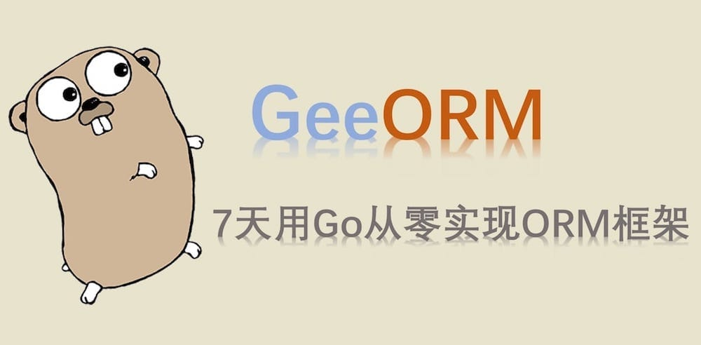

7天用Go从零实现ORM框架GeeORM
7天用 Go语言/golang 从零实现 ORM 框架 GeeORM 教程(7 days implement golang object relational mapping framework from scratch tutorial)，动手写 ORM 框架，参照 gorm, xorm 的实现。功能包括对象和表结构的相互映射，表的创建…

1 谈谈 ORM 框架
对象关系映射（Object Relational Mapping，简称ORM）是通过使用描述对象和数据库之间映射的元数据，将面向对象语言程序中的对象自动持久化到关系数据库中。
那对象和数据库是如何映射的呢？
| 数据库 | 面向对象的编程语言 |
|---|---|
| 表(table) | 类(class/struct) |
| 记录(record, row) | 对象 (object) |
| 字段(field, column) | 对象属性(attribute) |
举一个具体的例子，来理解 ORM。
CREATE TABLE `User` (`Name` text, `Age` integer);
INSERT INTO `User` (`Name`, `Age`) VALUES ("Tom", 18);
SELECT * FROM `User`;
第一条 SQL 语句，在数据库中创建了表 User，并且定义了 2 个字段 Name 和 Age；第二条 SQL 语句往表中添加了一条记录；最后一条语句返回表中的所有记录。
假如我们使用了 ORM 框架，可以这么写：
type User struct {
Name string
Age int
}
orm.CreateTable(&User{})
orm.Save(&User{"Tom", 18})
var users []User
orm.Find(&users)
ORM 框架相当于对象和数据库中间的一个桥梁，借助 ORM 可以避免写繁琐的 SQL 语言，仅仅通过操作具体的对象，就能够完成对关系型数据库的操作。
那如何实现一个 ORM 框架呢？
CreateTable方法需要从参数&User{}得到对应的结构体的名称 User 作为表名，成员变量 Name, Age 作为列名，同时还需要知道成员变量对应的类型。Save方法则需要知道每个成员变量的值。Find方法仅从传入的空切片&[]User，得到对应的结构体名也就是表名 User，并从数据库中取到所有的记录，将其转换成 User 对象，添加到切片中。
如果这些方法只接受 User 类型的参数，那是很容易实现的。但是 ORM 框架是通用的，也就是说可以将任意合法的对象转换成数据库中的表和记录。例如：
type Account struct {
Username string
Password string
}
orm.CreateTable(&Account{})
这就面临了一个很重要的问题：如何根据任意类型的指针，得到其对应的结构体的信息。这涉及到了 Go 语言的反射机制(reflect)，通过反射，可以获取到对象对应的结构体名称，成员变量、方法等信息，例如：
typ := reflect.Indirect(reflect.ValueOf(&Account{})).Type()
fmt.Println(typ.Name()) // Account
for field := range typ.Fields() {
fmt.Println(field.Name) // Username Password
}
reflect.ValueOf()获取指针对应的反射值。reflect.Indirect()获取指针指向的对象的反射值。(reflect.Type).Name()返回类名(字符串)。(reflect.Type).Fields()是 Go 1.26 的字段迭代器，可依次获取所有成员变量。
除了对象和表结构/记录的映射以外，设计 ORM 框架还需要关注什么问题呢？
1）MySQL，PostgreSQL，SQLite 等数据库的 SQL 语句是有区别的，ORM 框架如何在开发者不感知的情况下适配多种数据库？
2）如何对象的字段发生改变，数据库表结构能够自动更新，即是否支持数据库自动迁移(migrate)？
3）数据库支持的功能很多，例如事务(transaction)，ORM 框架能实现哪些？
4）...
2 关于 GeeORM
数据库的特性非常多，简单的增删查改使用 ORM 替代 SQL 语句是没有问题的，但是也有很多特性难以用 ORM 替代，比如复杂的多表关联查询，ORM 也可能支持，但是基于性能的考虑，开发者自己写 SQL 语句很可能更高效。
因此，设计实现一个 ORM 框架，就需要给功能特性排优先级了。
Go 生态中常用的 ORM 包括 GORM 和 XORM。它们已经发展出关联关系、钩子、迁移、读写分离等完整能力；GeeORM 只选择其中最适合教学的核心机制逐步实现，不追求 API 或功能完全兼容。
gorm 正在彻底重构 v1 版本，短期内看不到发布 v2 的可能。相比于 gorm-v1，xorm 在设计上更清晰。GeeORM 的设计主要参考了 xorm，一些细节上的实现参考了 gorm。GeeORM 的目的主要是了解 ORM 框架设计的原理，具体实现上鲁棒性做得不够，一些复杂的特性，例如 gorm 的关联关系，xorm 的读写分离没有实现。目前支持的特性有：
- 表的创建、删除、迁移。
- 记录的增删查改，查询条件的链式操作。
- 单一主键的设置(primary key)。
- 钩子(在创建/更新/删除/查找之前或之后)
- 事务(transaction)。
- ...
GeeORM 分7天实现，每天完成的部分都是可以独立运行和测试的，就像搭积木一样，一个个独立的特性组合在一起就是最终的 ORM 框架。每天的代码在 100 行左右，同时配有较为完备的单元测试用例。
3 目录
- 第一天：database/sql 基础 | Code
- 第二天：对象表结构映射 | Code
- 第三天：记录新增和查询 | Code
- 第四天：链式操作与更新删除 | Code
- 第五天：实现钩子(Hooks) | Code
- 第六天：支持事务(Transaction) | Code
- 第七天：数据库迁移(Migrate) | Code
附 推荐阅读
通俗学习地图：ORM 是 Go 对象与 SQL 之间的翻译流水线
ORM 不是让数据库消失，而是把重复的“读结构体、拼 SQL、绑定参数、扫描结果”集中到框架中。使用者仍然需要理解表、列、索引和事务；框架只是让常见操作能用更一致的 Go API 表达。
Go 结构体值
↓ 反射解析
Schema（表名、字段名、字段类型）
↓ Clause 按操作类型组装
SQL 模板 + 参数列表
↓ database/sql + SQLite 驱动
数据库执行或返回 rows
↓ Scan + 反射赋值
Go 结构体值
七天围绕这条双向翻译链展开：
- 第一天先封装
database/sql，理解连接、执行和查询的基础边界。 - 第二天用反射把 Go 结构体解析成 Schema，并由不同方言把 Go 类型映射为数据库类型。
- 第三天通过 Clause 构造 INSERT 与 SELECT，再把查询结果扫描回结构体。
- 第四天补齐 WHERE、ORDER BY、LIMIT、UPDATE、DELETE 等链式操作。
- 第五天增加 Hooks，在增删改查前后提供模型级扩展点。
- 第六天让一组操作共享同一事务，并统一处理提交、回滚和 panic。
- 第七天比较模型字段与数据库列，演示 SQLite 下的表结构迁移。
阅读时要持续区分三种状态：Engine 持有数据库连接池和方言，生命周期通常较长；Session 保存某一次 SQL 构建过程，执行后应清空；Schema 是模型元数据，可复用但不代表一条具体记录。很多并发或串语句问题都来自把这三层混在一起。
教学版 GeeORM 展示的是骨架，不是生产级迁移和查询系统。真实项目还要处理字段标签、NULL、关系映射、预加载、上下文取消、占位符差异、索引、迁移版本、审计与更完整的错误传播。尤其不要把自动迁移当作无风险操作，任何删列或改类型都应先备份并评估数据损失。